Common Core Finder
Cloud storage for educators to share ideas, connect, and organize lessons.
View Prototype 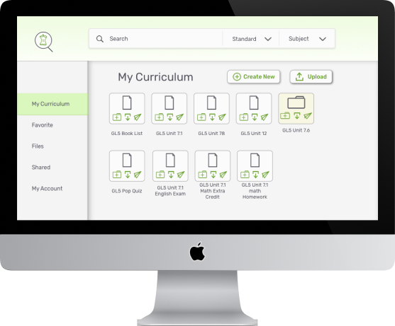What it is
Teachers work really hard. It’s time we gave them a tool to connect and share their work load. With Common Core Finder (CCF) teachers are able to share curriculums that connect to the state standard. CCF needed help with user experience, user interface and branding. With my background in education I was excited to help out.
The Problem
Cloud storage applications are vast and overwhelming. There needs to be a platform just for educators that are working towards the same goal in teaching the state standard. The platform needs to hold these key features: find, share, create, and collaborate.
The Solution
Common Core Finder is the solution for educators to save time and connect with one another. The cloud storage market is vast, and CCF gives those who work in education a place to call their own.
- Role
- Tools
- Deliverables
Discovery and Research
Survey
To create an application for teachers, I needed to get to know the educators. I surveyed teachers and asked them about their cloud storage preferences. This way I was able to market the product to their needs as they are the target audience. Full survey questions and results.
- What are your cloud storage preferences?
- How do you find lesson plans and resources for the classroom?
- What frustrates you?
- What is most accessible?
What the teachers said..
- Sharing a single item
- Uploading a file/document from a computer or mobile device.
Most Important
- Finding documents they created in folders(organization).
- Curriculum resources that are reliable and connect to their curriculum.
- Dead end links.
Most Frustrating
8%
Only 8 percent of people stated they got their curriculum resources from a trusted source.
66%
66 perecent of people said they are frustrated finding resources because of endless unorganized results.
83%
83 percent of people prefer link sharing over other social aspects of cloud storage applications.
There is a need for a cloud based storage application with reliable and organized resources that can be easily shared with others.
The Competition
- Google Classroom
- Teachers Pay Teachers
- Organization
- Connecting to Core Curriculum
- Easy to share
- Reliable resources
- Dead end links
- Information without filtration
- Hard to find documents
- Visual
- Age appropriate
- Easy to sort/organize
- Student friendly
- Attaching links
- Presentation
- Creating an account
- Signing into an account
- Saving files
- Uploading files
- organizing files
- Collaborating on files
- Sharing files
- Sharing a folder or file
- Browsing/viewing files
- Landing page: needed to have a sign up field, so new users were more inticed and had less steps or clicks to join.
- Navigation: side bar needed to stay present and static on all pages.
- Size: needed to be decreased and designed at 100%, so viewers could see all elements of the page.
- Common Core Standards
- Education
- Search
- Save information
- Save time
- Curriculum
- Teachers
- Curriculum development
- Resources
- Planning
- Curriculum Solved
- Teacher Time Saver
- Syllabus Solved
- Common Core Finder
- Edutime
- Review Resource 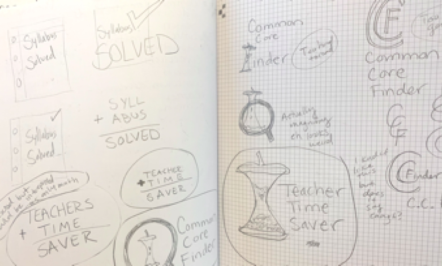


- Pinterest
Strengths
Visual imagery easy to scroll through.
Weakness
Anyone can add to the site leading to dead links, adds, and scams.
Strengths
Can be used to share documents between students and teachers minimizing paper use.
Weakness
No live updates.
Strengths
Opportunity for educators to sell lesson plans.
Weakness
Copyrights not respected so there can be copycats making money off posted resources.
What these companies are not doing is connecting to common core standards within states. There is a need from teachers to find reliable resources that connect to their curriculum in order to save time and share ideas.
User Personas
Courtney Lawrence
28, San Francisco
Alana Chelmsford
35, Boston
- Goals
- Frustrations
- Goals
- Frustrations
User Stories
Thirty-seven user stories were created with acceptance criteria. I learned what the high priorities were to focus on and who the main audience is to create different user experiences for.
Main Audiences
New and Returning Users
High Priorities
Now that I knew what the high priority tasks were I created user flows to better understand the flow of the application I was to create. I wanted to have a clear vision before I jumped onto the computer, so I created rough sketches and then went to draw.io to project digitally enhances version which can be found here.
User Flows
 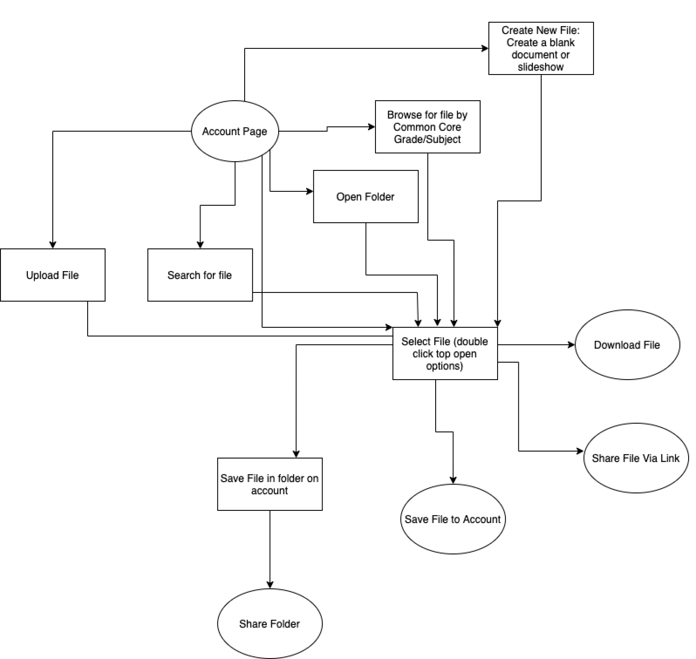
View User Flows
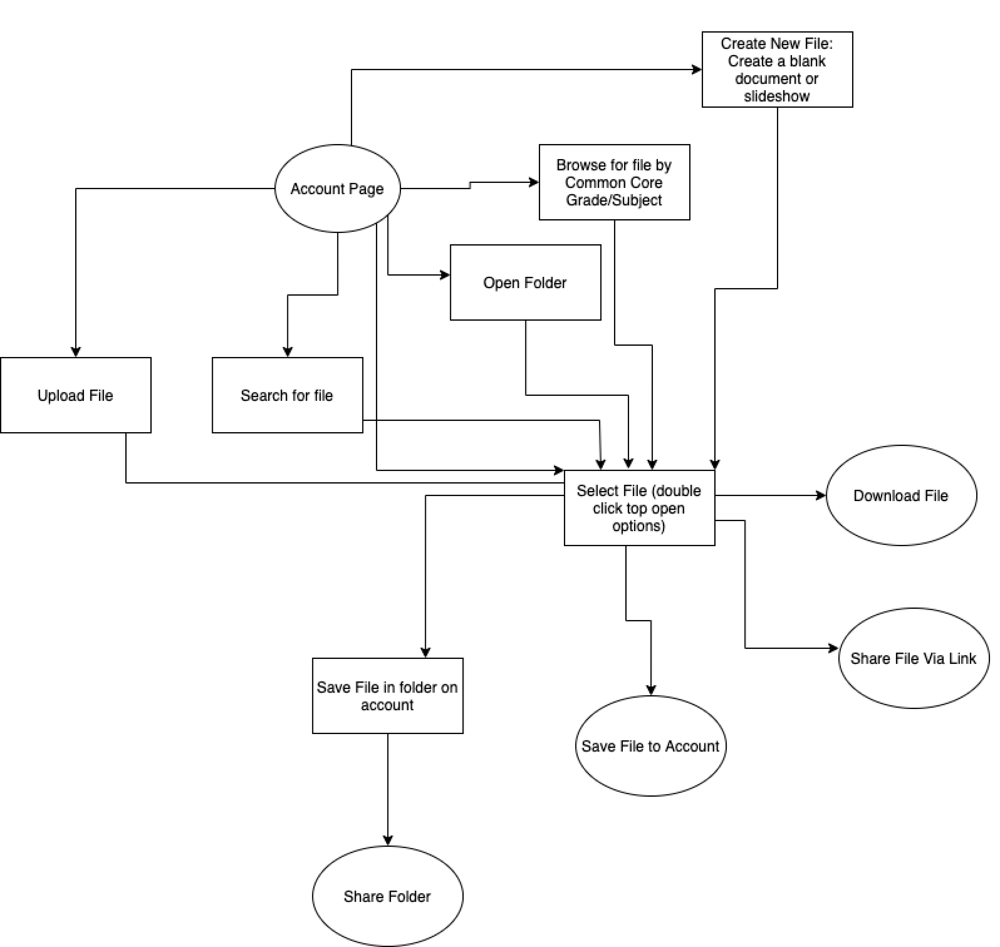
View User Flows
Information Architects
Wireframes
By creating user flows I was able to have a clear vision into the functionality of my designs. I then moved into sketching wire frames and transfering my sketches into vector design in figma.
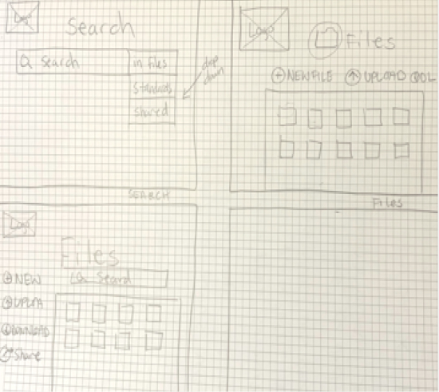 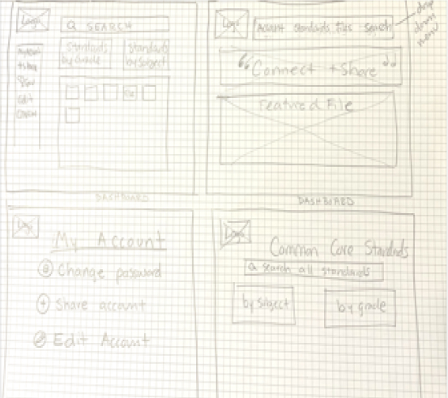 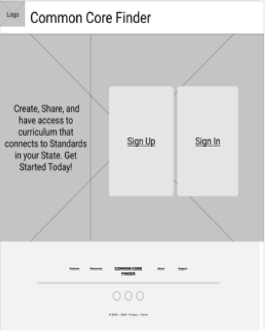 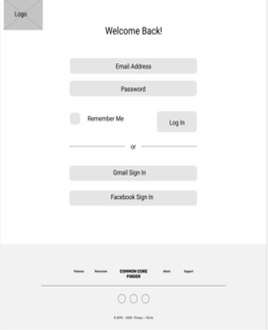 View WireframesAfter my wireframes were compelte I tested their usability on three educators. It was important to test teachers because I wanted to make sure it was the most functional and user friendly for our target audience. From the testing I learned that most functions worked as intended however almost everyone had a few frustrations or confusions.
What needed to change...
Visual Design
Branding
Branding was an ongoing task until the final touches of the high fidelity mock up were complete. I wanted to include an apple core to represent the common core standards of the state. Apples also have an associationw the teachers and education in general. I added the magnifying glass to enclose the core and also incorporate the resource aspect of the platform. The final style guide can be found here.
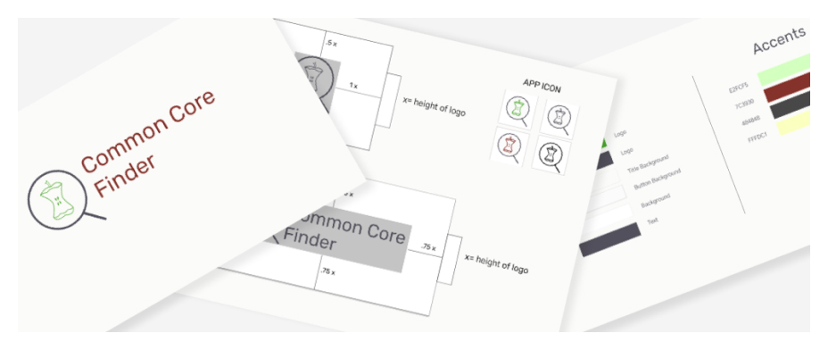Logo
First I created a list of key descriptions of the brand. From here I could brainstorm possible names. After I had a few names chosen I started sketching until I came to my final choices to vectorize.
Tweeks after critiques...
After critiques and preference testing I made a few adjustments to the logo including an even stroke and simplfied balanced apple core.
Mood Board
I experimented with many color pallets. I was most inspired by chalkboards, graphite, and brick walls that call to mind the very basic structure and symbolism of education.
View Branding GuidePrototype & Testing
Hi-Fi Mockup
From the wireframes I added icons, color, and referred to my style guide for text and sizing. I wanted the call to actions on the screen to be obvious to the user so I sparingly used color aside for the call to action icons and buttons. I also wanted to include a features page with the same icons on the landing page. This proved to be helpful to a user who used it as a guide for what the icons meant.
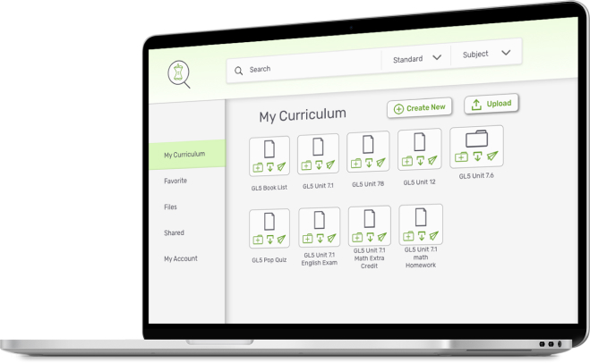User Testing
After testing the first hi-fi mock up I received feedback that the interface looked bland and the buttons not clearly clickable. I made adjustments within the UI to reflect these changes. All of the user flows were easy for the testers except for organizing content. Most people wanted to drag content, but eventually clicked the add to folder icon.
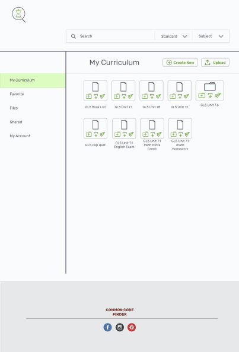Conclusion
The project was successful in many aspects. The L shaped design was easy for users to interpret and understand. The side navigation bar was understood and easy accessible for people to move from page to page. All the testers understood that this was an application geared towards teachers and grasped the concept of the site.
When I first started the project I was concerned about making a site with so many functions and still maintain a simple and user friendly experience. In efforts to do this I first created a site that was rather bland and overly simple. What surprised me the most was that my early testers did not understand what the icons represented. To rectify this I included the icons on the landing page with the function descriptions of the website.
Organization for the user was an ongoing struggle. Most wanted to drag files into folders or into the nav-side bar. Some could not fathom how they would organize and gave up. If I had more time and resources I would have created a test for the users to drag files as this is the most intuitive way to organize. If that was not possible I would have spent more time creating a clickable organizational system. I would have also liked to play around with other visual layouts to incorporate more of a visual shopping experience for educators to choose curriculum rather than relying on file and folder name.
During this project I learned how to fine tune my mock-ups and use testing not only for usability, but for feedback on design and preference testing. I also learned the importance of testing many demographics and ages. I’ll use this information in the future by testing early and testing often.